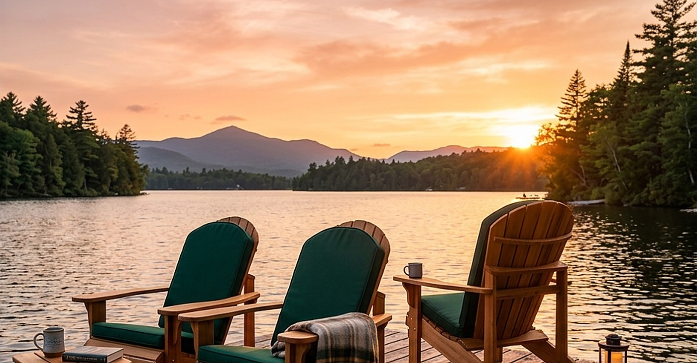
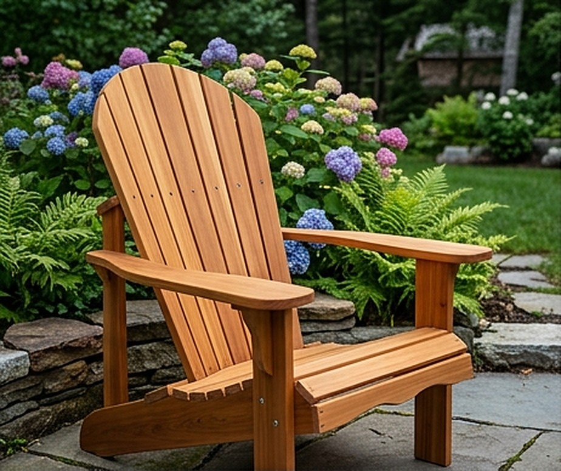
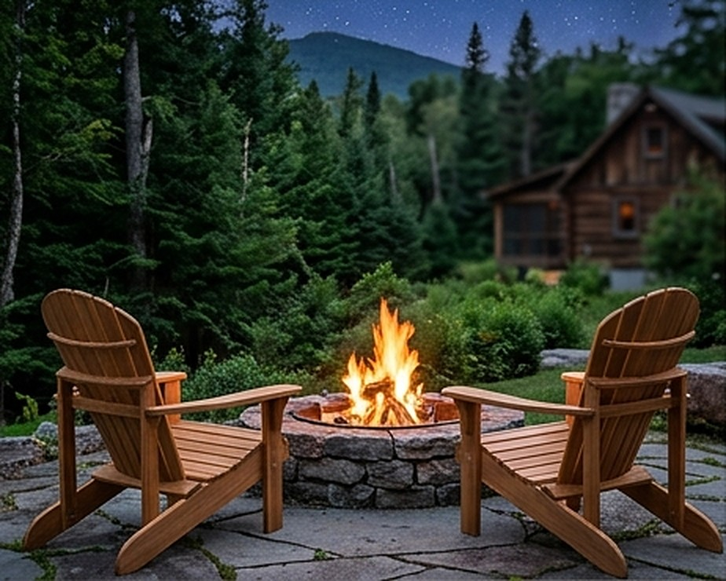
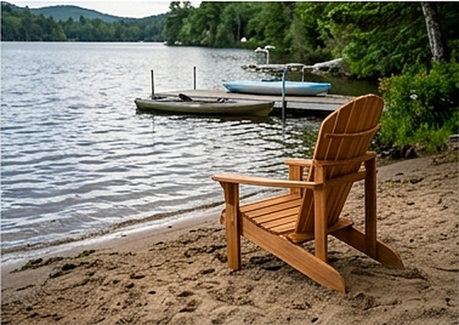

Handgefertigt
Jede Latte wird einzeln geschliffen und verleimt. Es gibt keinen Lagerbestand, nur Ihre Bestellung.
Entdecken Sie die besten Adirondack-Stühle für Ihren Garten oder Ihre Terrasse.
Jede Latte wird einzeln geschliffen und verleimt. Es gibt keinen Lagerbestand, nur Ihre Bestellung.
Lackiert oder geölt für Sonne, Regen und Frost. Die Farbe bleibt über Jahre stabil.
Wir stehen zu unserer Verarbeitung, auf Konstruktion und Oberfläche.




Farbe pro Bauteil, Material, Oberfläche und Kissen. Im 3D-Konfigurator sehen Sie das Ergebnis sofort.
Zum Konfigurator